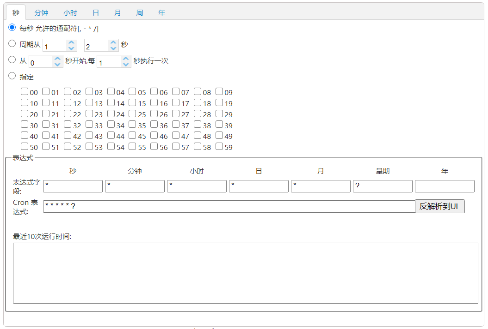
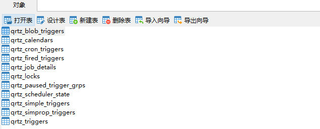
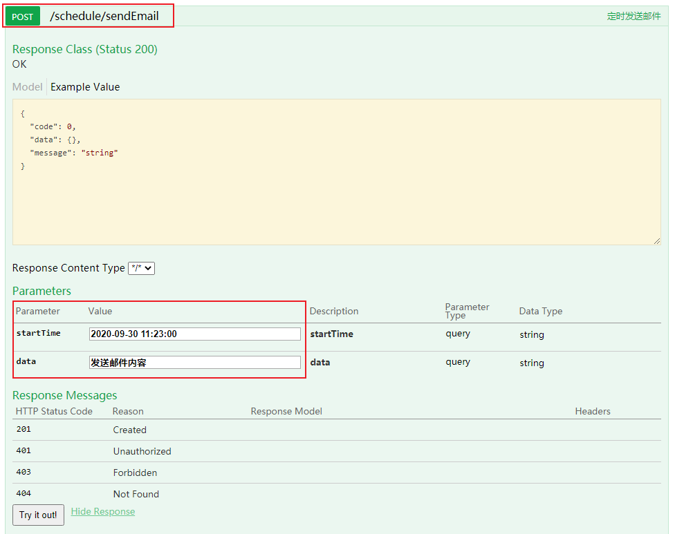
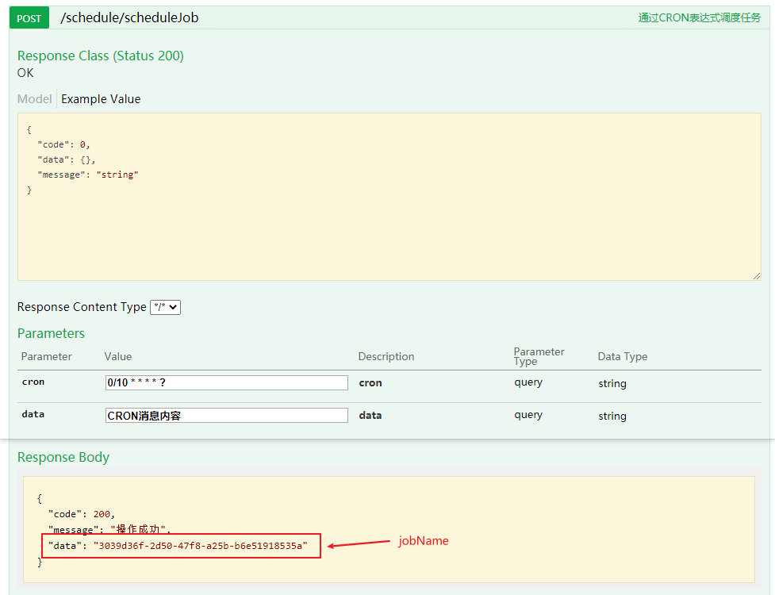
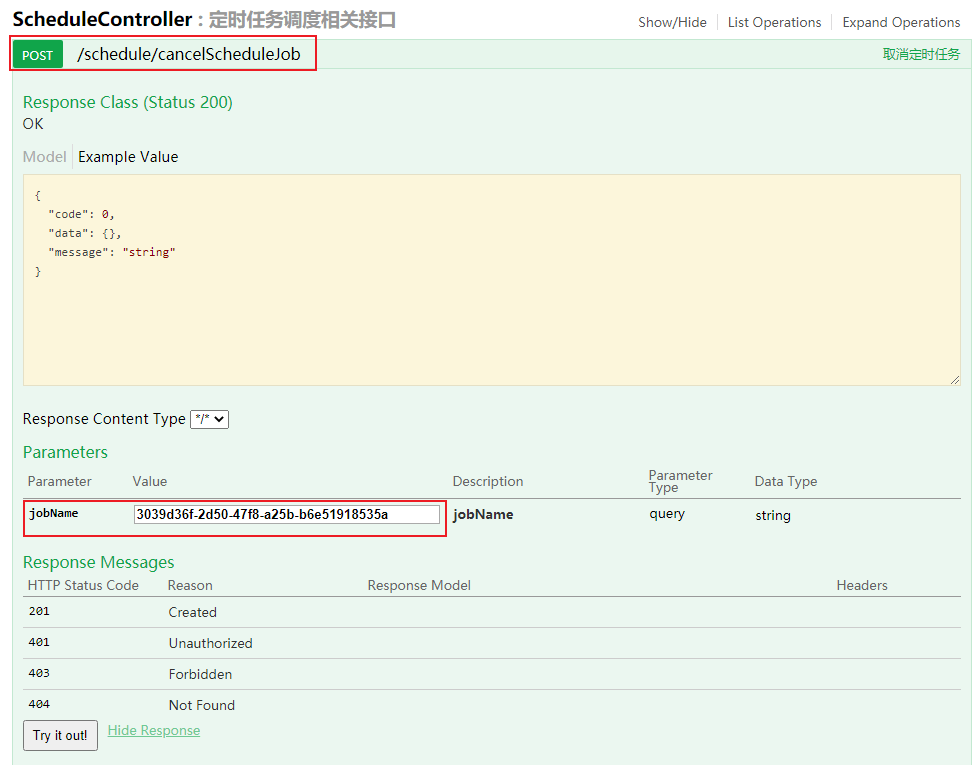

学习不走弯路，关注公众号 回复「学习路线」，获取mall项目专属学习路线！
SpringBoot官方支持任务调度框架，轻量级用起来也挺香！
之前我们讲过一个分布式任务调度框架PowerJob，可以通过可视化的方式来进行任务调度。但是有时候我们只是需要一个轻量级的任务调度功能，而PowerJob需要搭建调度中心未免有些重，这时候SpringBoot官方支持的任务调度框架Quartz就派上用场了！本文主要介绍Quartz在SpringBoot中的使用，让你在实现任务调度上有更多的选择！
Quartz简介
Quartz是一款功能强大的开源任务调度框架，几乎可以集成到任何Java应用程序中（小到单机应用，大到分布式应用）。Quartz可用于创建简单或复杂的任务调度，用以执行数以万计的任务。任务被定义为标准化的Java组件，Java编写的任务都可以被执行。
核心概念
Quartz中有一些比较核心的概念，理解它们对使用Quartz很有帮助！
- Scheduler（调度器）：Quartz中的任务调度器，通过Trigger和JobDetail可以用来调度、暂停和删除任务。
- Trigger（触发器）：Quartz中的触发器，可以通过CRON表达式来指定任务执行的时间，时间到了会自动触发任务执行。
- JobDetail（任务详情）：Quartz中需要执行的任务详情，包括了任务的唯一标识和具体要执行的任务，可以通过JobDataMap往任务中传递数据。
- Job（任务）：Quartz中具体的任务，包含了执行任务的具体方法。
CRON表达式
Cron表达式是一个字符串，包括6~7个时间元素，在Quartz中可以用于指定任务的执行时间。
CRON的语法格式
Seconds Minutes Hours DayofMonth Month DayofWeek
CRON格式中每个时间元素的说明
| 时间元素 | 可出现的字符 | 有效数值范围 |
|---|---|---|
| Seconds | , - * / | 0-59 |
| Minutes | , - * / | 0-59 |
| Hours | , - * / | 0-23 |
| DayofMonth | , - * / ? L W | 0-31 |
| Month | , - * / | 1-12 |
| DayofWeek | , - * / ? L # | 1-7或SUN-SAT |
CRON格式中特殊字符说明
| 字符 | 作用 | 举例 |
|---|---|---|
| , | 列出枚举值 | 在Minutes域使用5,10，表示在5分和10分各触发一次 |
| - | 表示触发范围 | 在Minutes域使用5-10，表示从5分到10分钟每分钟触发一次 |
| * | 匹配任意值 | 在Minutes域使用*, 表示每分钟都会触发一次 |
| / | 起始时间开始触发，每隔固定时间触发一次 | 在Minutes域使用5/10,表示5分时触发一次，每10分钟再触发一次 |
| ? | 在DayofMonth和DayofWeek中，用于匹配任意值 | 在DayofMonth域使用?,表示每天都触发一次 |
| # | 在DayofMonth中，确定第几个星期几 | 1#3表示第三个星期日 |
| L | 表示最后 | 在DayofWeek中使用5L,表示在最后一个星期四触发 |
| W | 表示有效工作日(周一到周五) | 在DayofMonth使用5W，如果5日是星期六，则将在最近的工作日4日触发一次 |
在线CRON表达式生成器
其实CRON表达式无需多记，需要使用的时候直接使用在线生成器就可以了，地址：https://cron.qqe2.com/

整合SpringBoot使用
接下来我们讲下如何在SpringBoot中使用Quartz来实现任务调度，在电商系统中往往会有需要定时发送邮件或者站内信的需求，我们以此为场景来实现下！
- Quartz存储任务信息有两种方式，使用内存或者使用数据库来存储，这里我们采用数据库存储的方式，首先需要新建Quartz的相关表，建表脚本在项目的
resources目录下，名称为tables_mysql.sql，创建成功后数据库中多出11张表；

- 接下来在
pom.xml中添加Quartz的相关依赖即可，SpringBoot官方已经给我们提供好了相关Starter；
<!--SpringBoot集成QuartZ-->
<dependency>
<groupId>org.springframework.boot</groupId>
<artifactId>spring-boot-starter-quartz</artifactId>
</dependency>
- 在
application.yml中添加Quartz相关配置，配置说明直接看注释就好了，主要是对scheduler、jobStore和threadPool进行配置；
spring:
quartz:
job-store-type: jdbc # quartz任务存储类型：jdbc或memory
wait-for-jobs-to-complete-on-shutdown: true # 关闭时等待任务完成
overwrite-existing-jobs: true # 可以覆盖已有的任务
properties: # quartz原生配置
org:
quartz:
scheduler:
instanceName: scheduler # 调度器实例名称
instanceId: AUTO # 调度器实例ID自动生成
jobStore:
class: org.quartz.impl.jdbcjobstore.JobStoreTX # 调度信息存储处理类
driverDelegateClass: org.quartz.impl.jdbcjobstore.StdJDBCDelegate # 使用完全兼容JDBC的驱动
tablePrefix: QRTZ_ # quartz相关表前缀
useProperties: false # 是否将JobDataMap中的属性转为字符串存储
threadPool:
class: org.quartz.simpl.SimpleThreadPool # 指定线程池实现类，对调度器提供固定大小的线程池
threadCount: 10 # 设置并发线程数量
threadPriority: 5 # 指定线程优先级
- 创建任务调度业务接口，定义好三个方法，分别为通过CRON表达式调度任务、调度指定时间的任务和取消定时任务；
/**
* Quartz定时任务操作类
* Created by macro on 2020/9/27.
*/
public interface ScheduleService {
/**
* 通过CRON表达式调度任务
*/
String scheduleJob(Class<? extends Job> jobBeanClass, String cron, String data);
/**
* 调度指定时间的任务
*/
String scheduleFixTimeJob(Class<? extends Job> jobBeanClass, Date startTime, String data);
/**
* 取消定时任务
*/
Boolean cancelScheduleJob(String jobName);
}
- 创建任务调度业务实现类，通过
Scheduler、CronTrigger、JobDetail的API实现相关方法；
/**
* Quartz定时任务操作实现类
* Created by macro on 2020/9/27.
*/
@Slf4j
@Service
public class ScheduleServiceImpl implements ScheduleService {
@Autowired
private Scheduler scheduler;
private String defaultGroup = "default_group";
@Override
public String scheduleJob(Class<? extends Job> jobBeanClass, String cron, String data) {
// 创建需要执行的任务
String jobName = UUID.fastUUID().toString();
JobDetail jobDetail = JobBuilder.newJob(jobBeanClass)
.withIdentity(jobName, defaultGroup)
.usingJobData("data", data)
.build();
//创建触发器，指定任务执行时间
CronTrigger cronTrigger = TriggerBuilder.newTrigger()
.withIdentity(jobName, defaultGroup)
.withSchedule(CronScheduleBuilder.cronSchedule(cron))
.build();
//使用调度器进行任务调度
try {
scheduler.scheduleJob(jobDetail, cronTrigger);
} catch (SchedulerException e) {
e.printStackTrace();
log.info("创建定时任务失败！");
}
return jobName;
}
@Override
public String scheduleFixTimeJob(Class<? extends Job> jobBeanClass, Date startTime, String data) {
//日期转CRON表达式
String startCron = String.format("%d %d %d %d %d ? %d",
DateUtil.second(startTime),
DateUtil.minute(startTime),
DateUtil.hour(startTime, true),
DateUtil.dayOfMonth(startTime),
DateUtil.month(startTime) + 1,
DateUtil.year(startTime));
return scheduleJob(jobBeanClass, startCron, data);
}
@Override
public Boolean cancelScheduleJob(String jobName) {
boolean success = false;
try {
// 暂停触发器
scheduler.pauseTrigger(new TriggerKey(jobName, defaultGroup));
// 移除触发器中的任务
scheduler.unscheduleJob(new TriggerKey(jobName, defaultGroup));
// 删除任务
scheduler.deleteJob(new JobKey(jobName, defaultGroup));
success = true;
} catch (SchedulerException e) {
e.printStackTrace();
}
return success;
}
}
- 定义好需要执行的任务，继承
QuartzJobBean类，实现executeInternal方法即可，这里定义了三个任务，定时发送邮件、定时发送站内信和执行CRON表达式任务；
/**
* 发送邮件定时任务执行器
* Created by macro on 2020/9/27.
*/
@Slf4j
@Component
public class SendEmailJob extends QuartzJobBean {
@Autowired
private ScheduleService scheduleService;
@Override
protected void executeInternal(JobExecutionContext jobExecutionContext) throws JobExecutionException {
Trigger trigger = jobExecutionContext.getTrigger();
JobDetail jobDetail = jobExecutionContext.getJobDetail();
JobDataMap jobDataMap = jobDetail.getJobDataMap();
String data = jobDataMap.getString("data");
log.info("定时发送邮件操作：{}",data);
//完成后删除触发器和任务
scheduleService.cancelScheduleJob(trigger.getKey().getName());
}
}
/**
* 发送站内信定时任务执行器
* Created by macro on 2020/9/27.
*/
@Slf4j
@Component
public class SendMessageJob extends QuartzJobBean {
@Autowired
private ScheduleService scheduleService;
@Override
protected void executeInternal(JobExecutionContext jobExecutionContext) throws JobExecutionException {
Trigger trigger = jobExecutionContext.getTrigger();
JobDetail jobDetail = jobExecutionContext.getJobDetail();
JobDataMap jobDataMap = jobDetail.getJobDataMap();
String data = jobDataMap.getString("data");
log.info("定时发送站内信操作：{}",data);
//完成后删除触发器和任务
scheduleService.cancelScheduleJob(trigger.getKey().getName());
}
}
/**
* 使用CRON表达式的任务执行器
* Created by macro on 2020/9/29.
*/
@Slf4j
@Component
public class CronProcessJob extends QuartzJobBean {
@Override
protected void executeInternal(JobExecutionContext jobExecutionContext) throws JobExecutionException {
JobDetail jobDetail = jobExecutionContext.getJobDetail();
JobDataMap jobDataMap = jobDetail.getJobDataMap();
String data = jobDataMap.getString("data");
log.info("CRON表达式任务执行：{}",data);
}
}
- 最后创建好任务调度相关接口，调用任务调度业务类即可。
/**
* 定时任务调度相关接口
* Created by macro on 2020/9/29.
*/
@Api(tags = "ScheduleController", description = "定时任务调度相关接口")
@RestController
@RequestMapping("/schedule")
public class ScheduleController {
@Autowired
private ScheduleService scheduleService;
@ApiOperation("定时发送邮件")
@PostMapping("/sendEmail")
public CommonResult sendEmail(@RequestParam String startTime,@RequestParam String data) {
Date date = DateUtil.parse(startTime, DatePattern.NORM_DATETIME_FORMAT);
String jobName = scheduleService.scheduleFixTimeJob(SendEmailJob.class, date, data);
return CommonResult.success(jobName);
}
@ApiOperation("定时发送站内信")
@PostMapping("/sendMessage")
public CommonResult sendMessage(@RequestParam String startTime,@RequestParam String data) {
Date date = DateUtil.parse(startTime, DatePattern.NORM_DATETIME_FORMAT);
String jobName = scheduleService.scheduleFixTimeJob(SendMessageJob.class, date, data);
return CommonResult.success(jobName);
}
@ApiOperation("通过CRON表达式调度任务")
@PostMapping("/scheduleJob")
public CommonResult scheduleJob(@RequestParam String cron, @RequestParam String data) {
String jobName = scheduleService.scheduleJob(CronProcessJob.class, cron, data);
return CommonResult.success(jobName);
}
@ApiOperation("取消定时任务")
@PostMapping("/cancelScheduleJob")
public CommonResult cancelScheduleJob(@RequestParam String jobName) {
Boolean success = scheduleService.cancelScheduleJob(jobName);
return CommonResult.success(success);
}
}
运行测试
- 调用定时发送邮件接口测试；

- 到点之后发现控制台已经打印任务执行信息；
2020-09-30 11:23:00.035 INFO 10160 --- [eduler_Worker-1] com.macro.mall.tiny.job.SendEmailJob : 定时发送邮件操作：发送邮件内容
- 使用CRON表达式来启动一个定时任务，从0s开始，每隔10s执行一次；

- 控制台每隔10s打印任务执行信息；
2020-09-30 11:26:30.024 INFO 10160 --- [eduler_Worker-2] com.macro.mall.tiny.job.CronProcessJob : CRON表达式任务执行：CRON消息内容
2020-09-30 11:26:40.025 INFO 10160 --- [eduler_Worker-3] com.macro.mall.tiny.job.CronProcessJob : CRON表达式任务执行：CRON消息内容
2020-09-30 11:26:50.017 INFO 10160 --- [eduler_Worker-4] com.macro.mall.tiny.job.CronProcessJob : CRON表达式任务执行：CRON消息内容
2020-09-30 11:27:00.023 INFO 10160 --- [eduler_Worker-5] com.macro.mall.tiny.job.CronProcessJob : CRON表达式任务执行：CRON消息内容
2020-09-30 11:27:10.019 INFO 10160 --- [eduler_Worker-6] com.macro.mall.tiny.job.CronProcessJob : CRON表达式任务执行：CRON消息内容
- 我们可以通过启动任务返回的
jobName，调用取消定时任务的接口来取消任务，调用成功后定时任务不在执行。

参考资料
官方文档：http://www.quartz-scheduler.org/documentation/
项目源码地址
https://github.com/macrozheng/mall-learning/tree/master/mall-tiny-quartz
公众号